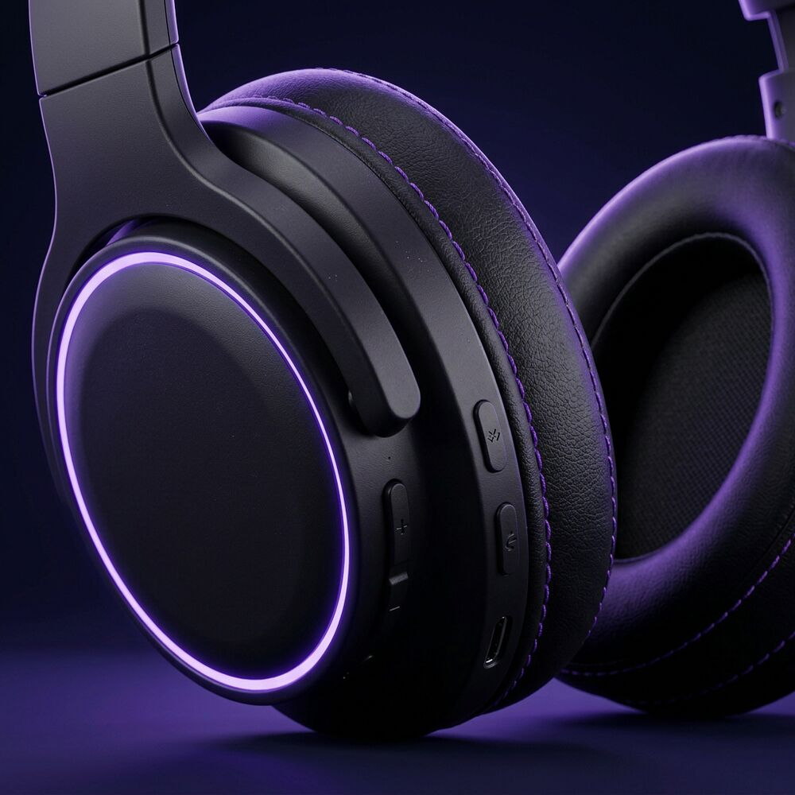

★★★★★
“Los uso 3 horas al día en el metro y cargo una vez por semana. El ANC es brutal.”
Pensados para el tren de cada mañana.

Pulse ANC combina cancelación activa de ruido híbrida con 6 micrófonos, drivers de 40 mm y almohadillas de espuma viscoelástica. El resultado: un sonido limpio y profundo, sin el mundo de fondo.
Una semana de trayectos con una sola carga. Y si vas con prisa, 5 minutos de carga te dan 4 horas.
Cancelación de ruido híbrida
Micrófonos para llamadas nítidas
Ligeros para todo el día
Dispositivos a la vez (multipunto)
Cada pieza de Pulse está pensada para desaparecer mientras la llevas puesta. Pulsa los puntos de la foto para descubrir por qué.


Activa el ANC y el tráfico, las conversaciones y el zumbido del aire acondicionado se convierten en nada. Solo tú y lo que quieras escuchar.
Quiero mis Pulse“Los uso 3 horas al día en el metro y cargo una vez por semana. El ANC es brutal.”
“Trabajo en una oficina abierta. Con los Pulse puedo concentrarme por primera vez.”
“Suenan de maravilla y son comodísimos. Me encanta el detalle de la luz violeta.”
Sí. Funcionan con cualquier dispositivo con Bluetooth y puedes conectar dos a la vez.
Sí, incluyen cable de 3,5 mm para usarlos en aviones o con la batería agotada.
La diadema es ajustable y las almohadillas de espuma viscoelástica reparten la presión. Están pensados para jornadas largas.
Tienes 30 días para devolverlos gratis, sin preguntas.